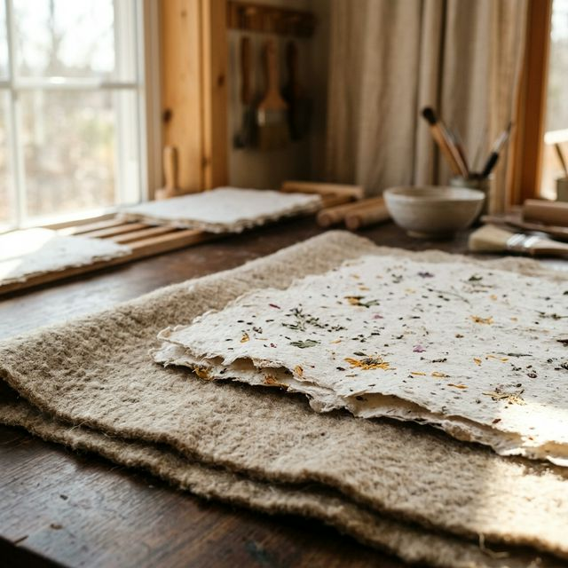

The Hands
Behind the Vat
Every sheet tells a story of intention, water, and time.

The Methodology
Reclaiming the Archival
We source premium textile offcuts, breaking them down into natural cotton fibers. Through a painstaking process of water immersion, pressing, and slow drying, we transform discarded remnants into heirloom canvases waiting for your pen.
Our Core Axioms
Sustainability
Foraging local botanicals and utilizing zero-chemical pulp reduction.
Tactility
Ensuring every sheet has the weight and tooth to challenge digital perfection.
Longevity
Archival sizing means your words outlast generations.